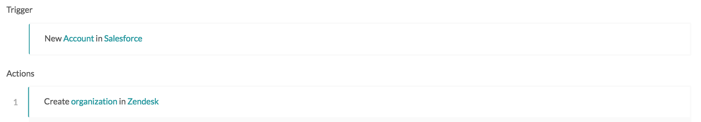

Workato core concepts
There are some Workato terminology that you might hear being punted around all the time. The core concepts and basic building blocks of Workato you'd need to know in order to understand most of the following documentation are covered briefly in this section.
Recipes
Recipes are automated workflows built by users that can span across multiple apps, e.g. moving new Salesforce accounts into Zendesk as new organizations. Each recipe comprises of a trigger and one or more actions that are carried out when a trigger event is picked up.
When recipes are started and become active, they will run automatically in the background to listen to trigger events and carry out recipe actions. When they are stopped and become inactive, they will cease listening to trigger events.
However, when a recipe is started again, it usually picks up all the trigger events it had not processed, from since the recipe was stopped till when the recipe was started again. Hence, any recipe restarted from a stopped state will resume from the point in time it was stopped.
All recipes have a unique ID that identifies it.

Recipe IDs can be viewed from the URL on the recipe page
Example of a recipe
The following is a simple recipe with one trigger and one action. The scenario is to move new Salesforce customers (known in Salesforce as accounts) into Zendesk as customers (known in Zendesk as organizations).
The trigger is New Salesforce account - this means that the recipe will trigger whenever a new Salesforce account is created within the connected Salesforce organization. The action is Create Zendesk organization - this means that a Zendesk organization will be created whenever a trigger event occurs (when a new account is created in Salesforce).

Example of a recipe that moves new Salesforce accounts into Zendesk as organizations
Triggers
Triggers are part of a recipe, and all recipes need a single trigger. Triggers determine what event to listen to in order to kick off the recipe flow.
In the following example recipe, the trigger is New Salesforce account.
Example of a recipe that moves new Salesforce accounts into Zendesk as organizations
Actions
Actions are part of a recipe, and all recipes need at least one action. Actions carry out operations automatically whenever a trigger event occurs and kicks off the recipe flow.
In the following example recipe, the action is Create Zendesk organization.
Example of a recipe that moves new Salesforce accounts into Zendesk as organizations
Output datatree and datapills
Almost all triggers and actions have an output datatree. These datatree contains all the variables available for use after the trigger event has happened and after the action has been carried out. These variables are typically called datapills.
On the right of these datapills, there are samples of real data retrieved from the connected app, to display what the data looks like within the app.
Example of an output datatree and datapills
The following is the output datatree for the trigger New Salesforce account. This datatree contains all the variables known to us and available for use whenever a trigger event occurs.

Output datatree for New Salesforce account trigger
For example, as seen in the screenshot, whenever a new Salesforce account is created, we're able to get the following values for this particular new Salesforce account:
Account description,
Account fax,
Account ID,
Account name,
Account number,
Account phone,
Account rating,
Account site,
Account source,
etc.
These values can be used in subsequent steps of the recipe by being passed into input fields, as covered next.
Input fields and fields mapping
Almost all triggers and actions have input fields. Input fields are how triggers and actions are designed to carry out customized workflows, and they can take in variables (datapills) or constants.
When we insert variables (datapills) or constants into input fields, that's called fields mapping.
Example of input fields
The following is an expanded view of the Create Zendesk organization action. In this view, we can see two input fields: Name and Notes.

Input fields for the action Create Zendesk organization
Mapping variables
The variable Account name has been mapped to the Name input field. This means that for every new Salesforce account that is created, the account name of this Salesforce account will be used as the organization name of the Zendesk organization that will be created. For example, a new Salesforce account named Sattei Winery will in turn create a Zendesk organization named Sattei Winery.

Input field with variable mapping
Mapping constants
On the other hand, the input field Notes has a constant mapped to it - the words "Synced over from Salesforce." This means that all newly created Zendesk organizations created via Workato will have the words "Synced over from Salesforce." in its Notes field.

Input field with constant mapping
Here's an example of the new Zendesk organization created via the above mapping:

Newly created Zendesk organization Sattei Winery
Connections
For a recipe to communicate with apps to read or write to them, it has to be connected to these apps. Custom data from the apps like custom fields and sample data in the datatree may not be visible if a connection has not been established. Connections are not tied to a recipe - a single connection can be used by multiple recipes.

Salesforce and Zendesk connections from the recipe view
Jobs history
The job history gives a high-level summary of the trigger events processed by the recipe. The entire flow of each trigger event through the recipe is called a job.
Information such as date and time processed and job IDs, can be found here. From this jobs history page, users can view more detailed information about a job by clicking on it.

Jobs history summary page
Job details page
The job details page provides step-by-step input/output details of a single trigger event as it is processed by the recipe. This page is useful for troubleshooting recipes as users are able to view the data passed into each step and the resultant output returned after each step was executed.

Job details page showing the syncing of Salesforce account Myers Brewery to Zendesk